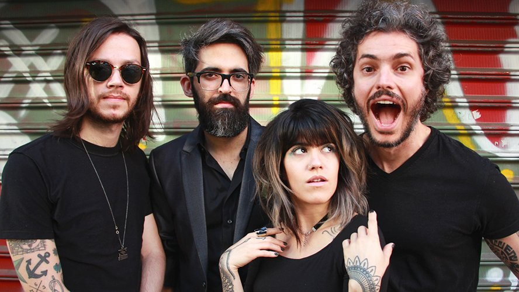

Supercombo
Supercombo é uma banda brasileira de rock alternativo fundada no ano de 2007, na cidade de Vitória (ES). Entre várias formações e ideias existentes, a banda conta atualmente com Leonardo Ramos (voz, guitarra, violão), Pedro "Toledo" Ramos (voz, guitarra, violão, bateria), Carol Navarro (voz, contrabaixo elétrico), Paulo Vaz (teclados, piano digital, programações, efeitos) e André Dea (bateria). Ao todo são 5 álbuns de estúdio e 3 EPs digitais. Mais informações.
Acompanho eles desde 2014 e são, de longe, meu grupo preferido. De todos os íncriveis projetos da banda guardo o albúm Rogério (2016) em um lugar especial pois foi, e é, muito importante pra mime pra minha trajetória.
Voltar aos Hobbies